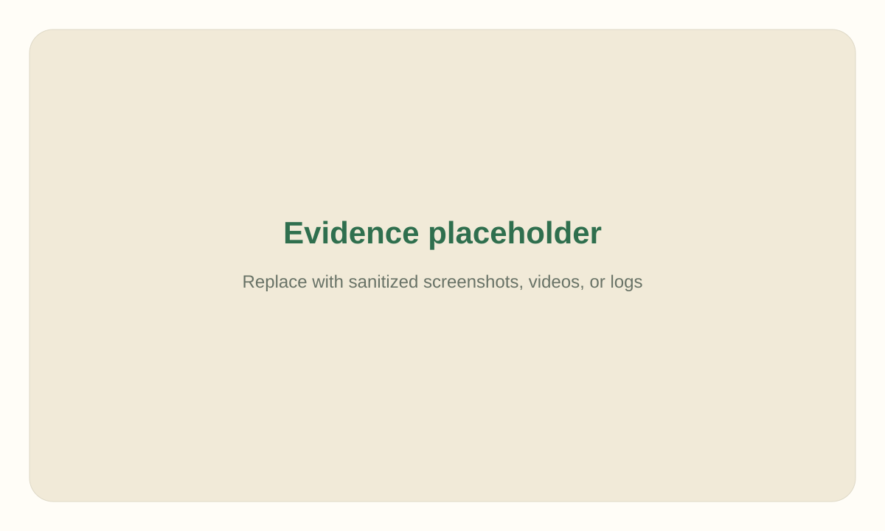

Replace with finding title
Expected: Describe expected behavior.
Observed: Describe observed behavior.
Next action: Describe the smallest useful follow-up.
QA evaluation report
Replace this lead with a concise summary of the tested flow, evidence captured, and headline result.
unknownState the verdict in plain language. Note whether the flow passed, partially passed, failed, was fixed, or remains unknown.
Add screenshots, videos, logs, and sanitized artifacts from assets/.

Expected: Describe expected behavior.
Observed: Describe observed behavior.
Next action: Describe the smallest useful follow-up.
# Example
# Start the app, run tests, capture evidence, and record exact commands here.No secrets, cookies, storage state, passwords, JWTs, bearer tokens, private keys, or PII were copied into this report. If authenticated testing was used, auth state stayed outside the report archive.